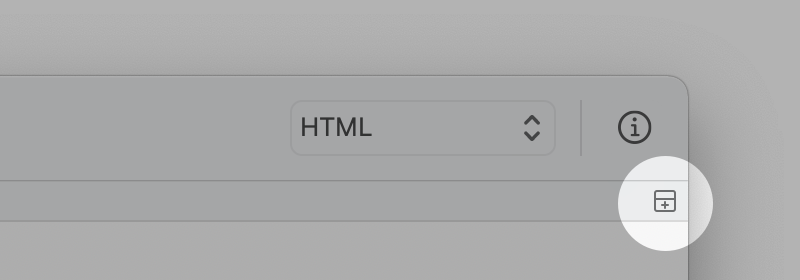

Puedes dividir el editor para mostrar y editar diferentes áreas del documento al mismo tiempo.

Para dividir un editor en varios paneles, elija Visualización > Dividir Editor, o, pulsa en el icon del borde derecho de la barra de navegación.
Para cerrar un editor dividido, elija Visualización > Cerrar editor dividido o haga clic en el icono en el borde izquierdo de la barra de navegación.
La orientación predeterminada para los editores divididos se puede establecer en Ajustes > Ventana > Dividir editor. También puedes cambiar la orientación de la división eligiendo Visualización > Apilar Editores Horizontalmente (o Verticalmente).